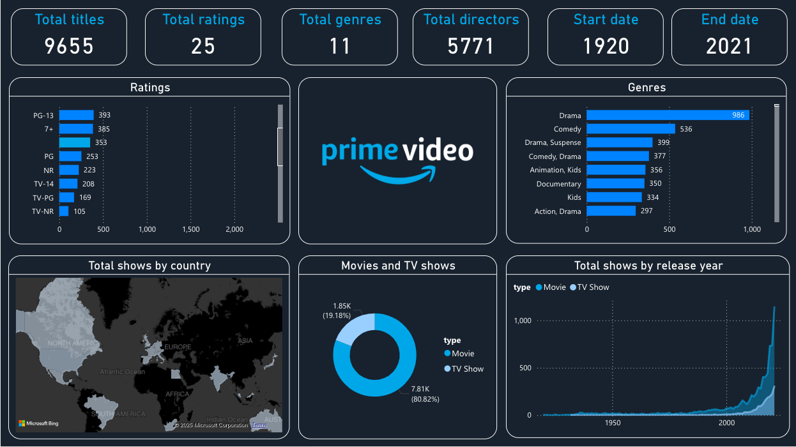
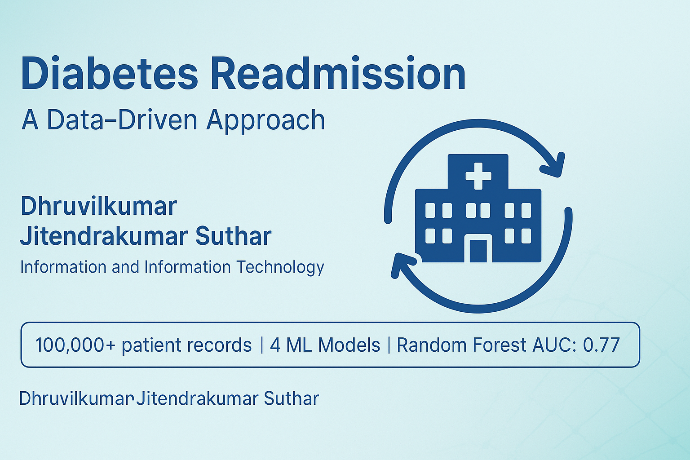
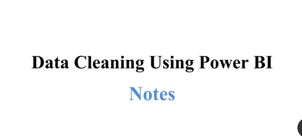

About Me
Recent graduate with a Master’s in Information Systems from Northeastern University and a Bachelor’s in IT Engineering from Gujarat Technological University. I’m passionate about leveraging data to drive strategic decision-making and have hands-on experience with Python, SQL, Tableau, Excel, and Power BI. My projects demonstrate my ability to transform raw data into actionable insights that support business growth and efficiency.
Technical Skills
Programming Languages: Python, SQL, R, DAX, M, HTML, CSS, JavaScript, YAML, JSON, HTML, CSS, Latex
Technologies: Power BI, Tableau, Looker, dbt, Databricks, Snowflake, BigQuery, Redshift, Azure Synapse, Airflow, Fivetran, Git, Spark, Hadoop, Kafka, Excel (Advanced), Power Query, Power Automate, REST APIs, Postman, MongoDB, MySQL, PostgreSQL, AWS, GCP, Azure, Jupyter, VS Code
Core Skills: Data Analytics, Business Intelligence (BI), Data Modeling, ETL/ELT, Data Warehousing, Forecasting, A/B Testing, Dashboard Development, Statistical Analysis, Data Cleaning, KPI Reporting, Data Visualization, Machine Learning (Basics), Predictive Analytics, Data Governance, CI/CD for Analytics
Featured Project
Airline performance Dashboard

Our airline faces critical challenges in maintaining consistent on-time performance and minimizing flight delays across major routes, while balancing competitive ticket pricing and delivering strong customer satisfaction. This comprehensive analysis reveals significant operational inefficiencies that demand immediate strategic intervention.
View Full Project PDFCity-wide Emergency Response Dashboard

This interactive dashboard transforms raw emergency incident data into actionable insights for improved emergency management and resource allocation. Analyzed 10,000+ incidents across 6 neighborhoods with weather impact, response times, and outcomes. Built with Power BI for real-time decision-making.
View Full Project PDFPrime Video Content Analysis Dashboard
A comprehensive data-driven study analyzing 9,655 titles across 101 years of entertainment content (1920-2021)
View Full Project PDFDiabetes Readmission Prediction
A predictive analytics project using machine learning to reduce hospital readmission rates for diabetic patients.
View Full Project PDFData Cleaning Using Power BI
Cleaning data is important because it makes sure the information, we use is accurate, consistent, and complete. It fixes mistakes, standardizes formats, fills in missing pieces, and removes irrelevant details. This helps us trust the data and get better results in analysis, decision-making, and creating machine learning models. Clean data also ensures we meet regulatory standards, saves time and resources, and leads to clearer insights and better decisions.
View Full Project PDF